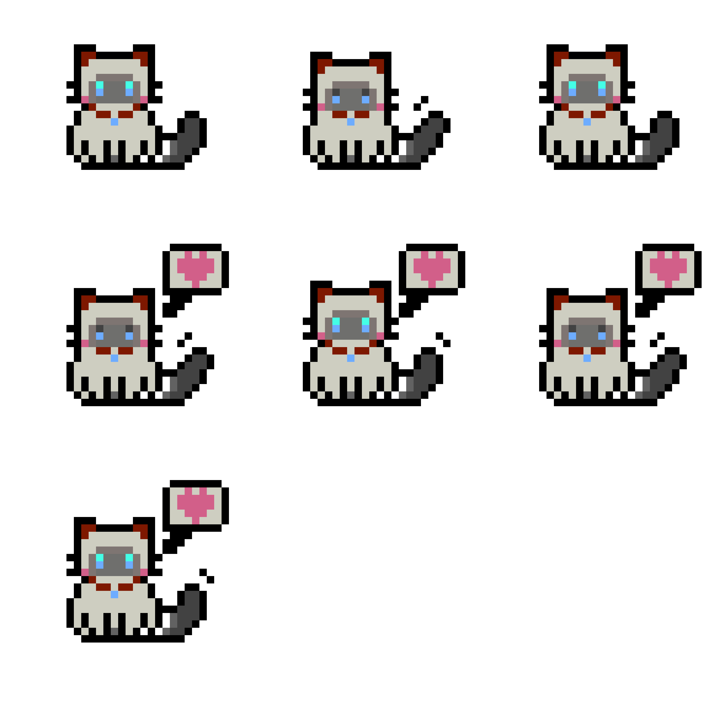
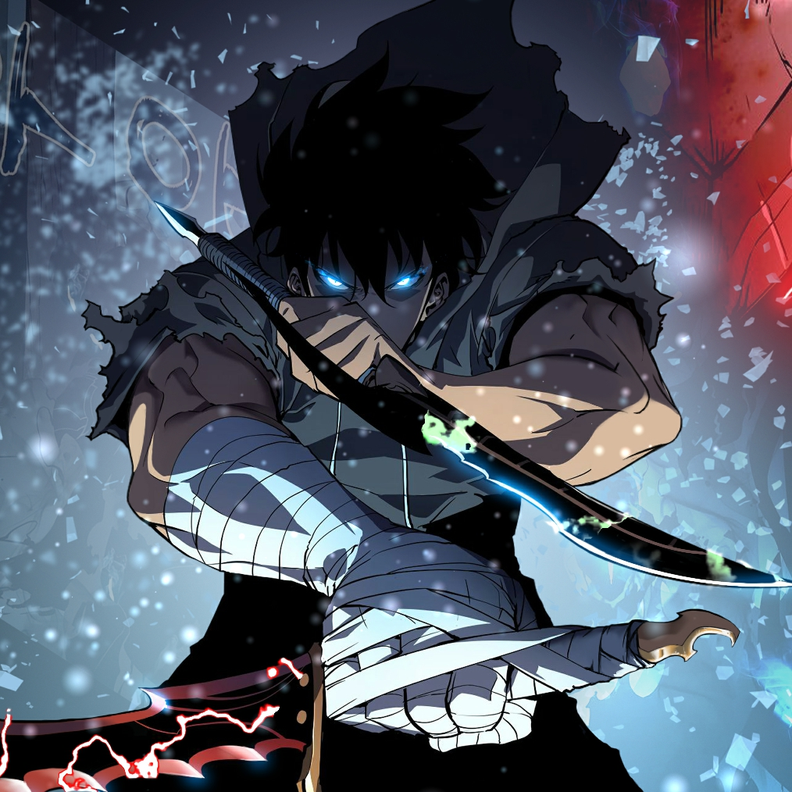

WELCOME BACK
ererethka
在代码、学术与游戏之间穿梭的普通人。把正在发生的灵感，安静地收进自己的数字花园。
0文章
0杂谈
5照片

在代码、学术与游戏之间穿梭的普通人。把正在发生的灵感，安静地收进自己的数字花园。
让旋律替你保存此刻的心情。
把今天的心情，交给一段旋律慢慢保存。
♫
把喜欢的工具、实验和开箱记录整理成一个真正属于自己的空间。
把路过的风景，留在这里。
记录一些没有标题的想法，等它们自己长成故事。
这个站点已经安静地陪伴了 0 天。今天也欢迎你随时回来。
这是一个由我亲手维护的静态博客外壳。数据与记录属于我自己，页面可以一直慢慢长大。